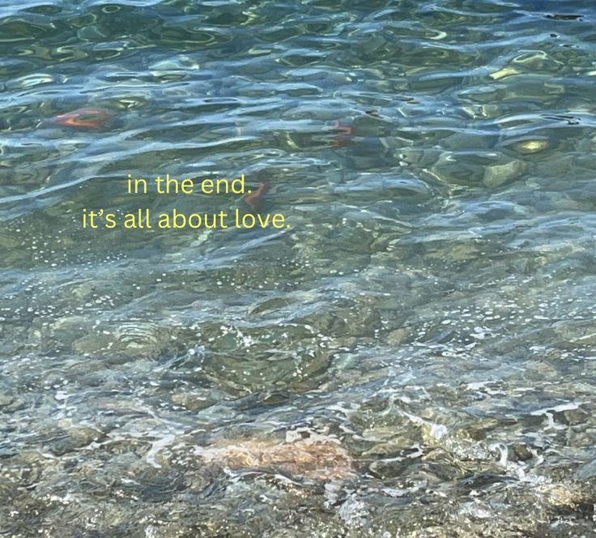

Hi, welcome to my page! My name is Andra, I am from Sibiu, Romania, where I am also currently living & studying. My hobbies are reading, travelling, dancing, fashion design/styling and informatics! But my passions are not just those. I am that type of person that is saddened by the fact that I can't live thousands of lives in order to experience every existing profession. Therefore all I can say is that my passions are ever-changing. This makes me a very open-minded and creative person which are two things I love about myself. But enough so far about me, you'll get more in depth info in the near future, but if you're curious what this blog is going to be about, well the answer is...EVERYTHING! I want to make this a safe space for everyone, a cute little nook that will remind you of the feeling of home. So if you wish to accompany me in this journey, delve into my multiverse of madness, get your blankets and cups of coffee/tea ready and let the stories embrace you in a sweet hug!

My fashion journey so far has been sinusoidal—a mix of highs and lows, with variations that keep things interesting. I've always been drawn to different eras like the vibrant 70s, the free-spiritedness of the hippie culture, the nostalgic charm of the Y2K era, and of course, the ever-evolving style of Emma Chamberlain. Listening to one of Emma's podcasts where she discussed her evolving style due to maturing, got me thinking. What if we embraced a more casual yet elegant approach to dressing? We’d look more professional and we’d channel our inner rich persona. And so I started using Vogue as an app like Pinterest. Though, later I found out Emma now wants to navigate into the goth world not rich girly, I continue(d) my journey. But in the end for me, fashion is a reflection of life, far from being black and white. Who's to say we can't dress trashy one day and classy the next?

Ever since I finally realised how I want to spend this little life of mine(work in IT), I got caught up in the circle of developing different IT projects. My current projects are Girls Code: Breaking Barriers and Technovation Girls. Both focus on encouraging girls to pursue their dreams in tech, which I think is a big need nowdays. These projects are amazing opportunties and I am learning so much. Through Girls Code I made this website you're currently reading! Through Technovation Girls I am learning how to CODE a mobile app. YES, A REAL MOBILE APP! I am so excited and happy with the progress I am making!

HI! Last week I visited Barcelona. I had this amazing opportunity since my school is involved in a LOT of Erasmus projects. Barcelona was a chaotic experience...Let me tell you...The do's and don'ts when visiting Barcelona
DO'S
DON'TS

School season is approaching, less free time, less time for experimenting with cooking. Here's how I try to maintain a healthy eating schedule: MEAL PREP! Here are some fast, easy, fulfilling meal prep ideas for when you have a full week!
+ Bonus snack idea: Chickpea cookie dough!

Summer is *almost* over, we are mourning the end of August(Taylor's version), which is both a sad and happy moment. But at least I get to talk about my favourite summer books, which are my favourite OVERALL books since summer is also my favourite season. So to get to point my favourite books I read this summer were:
HI! I am back from my trip to Albania and to be honest...I have mixed feelings. Don't get me wrong, it's a very beautiful country and the beach was amazing, but...THE PEOPLE really can't drive.